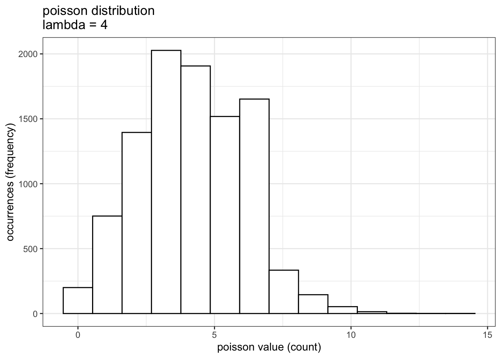
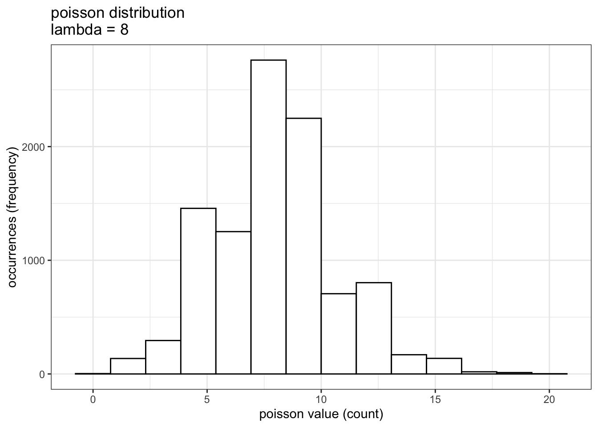
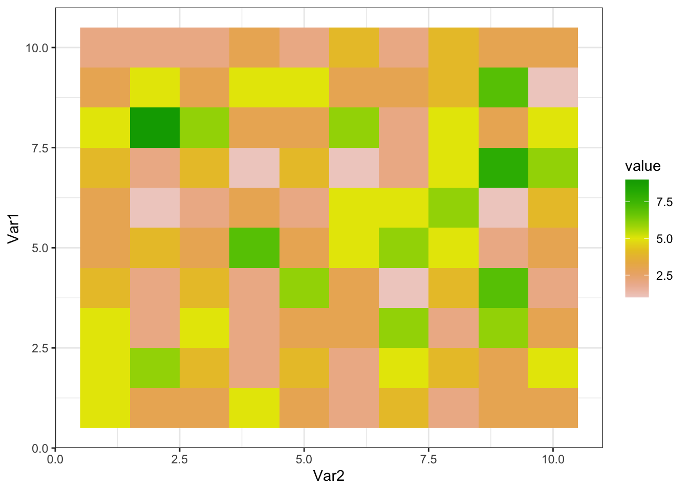

4 Simulation of a population and a sampling WITHOUT covariates
Con ayuda de R, vamos a simular una población de ciervos que se distribuye en un área de 100 km2 (100 cuadrados de 1 km de lado)
With the help of R, we are going to simulate a deer population that is distributed in an area of 100 km2 (100 squares of 1 km on each side)
set.seed(1) # ajustamos una "semilla"" para controlar la repetibilidad
# Con el paquete "raster" creamos una cuadrícula de 10x10
library(raster)
sarea <- raster(nrows = 10, ncols = 10, xmn = 0, xmx = 10, ymn = 0, ymx = 10)Este área de momento está vacía, por lo que tendremos que “llenarla” de ciervos virtuales (proceso de abundancia, o state process). Podemos utilizar una distribución de Poisson para “esparcir” nuestros ciervos simulados en el área de estudio. Esta distrubución es una de las más comunmente utilizadas en el estudio de abundancias. La distribución de Poisson maneja la frecuencia con la que un evento ocurre en un intervalo específico. Consta de un único parámetro llamado lambda λ que determina el número de eventos que ocurren normalmente en ese intervalo.
This area is currently empty, so we will have to “fill” it with virtual deer (abundance process, or state process). We can use a Poisson distribution to “spread” our simulated deer in the study area. This distribution is one of the most commonly used in the study of abundances. The Poisson distribution handles the frequency with which an event occurs in a specific interval. It consists of a single parameter called lambda λ that determines the number of events that normally occur in that interval.
# generate a random poisson distribution, 10000 values
poissonVector <- rpois(n = 10000, lambda = 4)
# convert the vector into a df
df <- data.frame(poissonCount = poissonVector)
noPlot <- ggplot(data=df, aes(x = poissonCount)) +
geom_histogram(bins = 14, color = "black", fill="white") +
theme_bw() +
labs( x = "poisson value (count)",
y = "occurrences (frequency)",
title = "poisson distribution\nlambda = 4")

En nuestro caso, el intervalo una unidad espacial, una cuadrícula, mientras que el evento será la presencia de un ciervo. El parámetro λ será la “abundancia esperada,” esto es, la abundancia media por cuadrícula. El número y la distribución de los ciervos virtuales que colocaremos en nuestro área de estudio vendrá determinado por una distribución de Poisson con λ=4:
In our case, the interval will be a spatial unit, a grid, while the event will be the presence of a deer. The parameter λ will be the “expected abundance,” that is, the mean abundance per grid. The number and distribution of virtual deer that we will place in our study area will be determined by a Poisson distribution with λ = 4:
\[ N_{i} \sim Poisson(λ) \]
siendo \(N_{i}\) el número total de individuos en la celda i.
Como podemos ver en el histograma de la izquierda, los valores más probables serán 3 o 4 ciervos, aunque variarán entre cero y 14 aproximadamente (aunque este útimo valor será muy poco probable).
where \(N_{i}\) is the total number of individuals in cell i.
As we can see in the histogram on the left, the most probable values will be 3 or 4 deer, although they will vary between zero and 14 approximately (although this last value will be very unlikely).
# Seleccionamos el lambda deseado
lambda <- 4
# Generamos 100 números aleatorios obtenidos de una distribucion
# de Poisson con una lambda = 4
sarea[] <- rpois(100, lambda)
# plot(sarea)# extract S4 data and build vector
area.vector <- as.vector(sarea)
# convert to matrix
area.matrix <- matrix(area.vector, byrow=T, nrow=10, ncol=10)
# reverse the rows (so we can compare plots)
area.matrix <- apply(area.matrix,2,rev)
colnames(area.matrix) <- c(1,2,3,4,5,6,7,8,9,10)
rownames(area.matrix) <- c(1,2,3,4,5,6,7,8,9,10)
longData<-melt(area.matrix)
longData<-longData[longData$value!=0,]
noPlot <- ggplot(longData, aes(x = Var2, y = Var1)) +
geom_raster(aes(fill=value)) +
scale_fill_gradientn(colors=rev(terrain.colors(12))) +
theme_bw()

donde
where